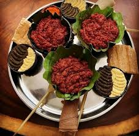
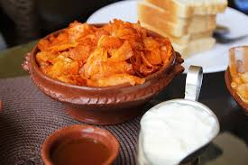
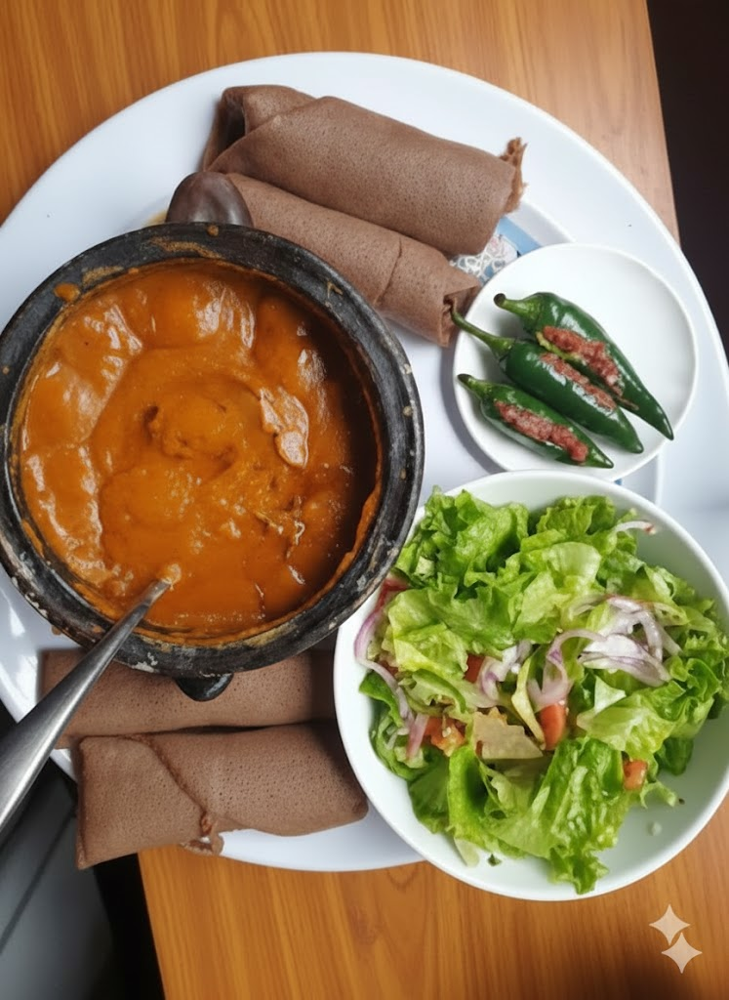
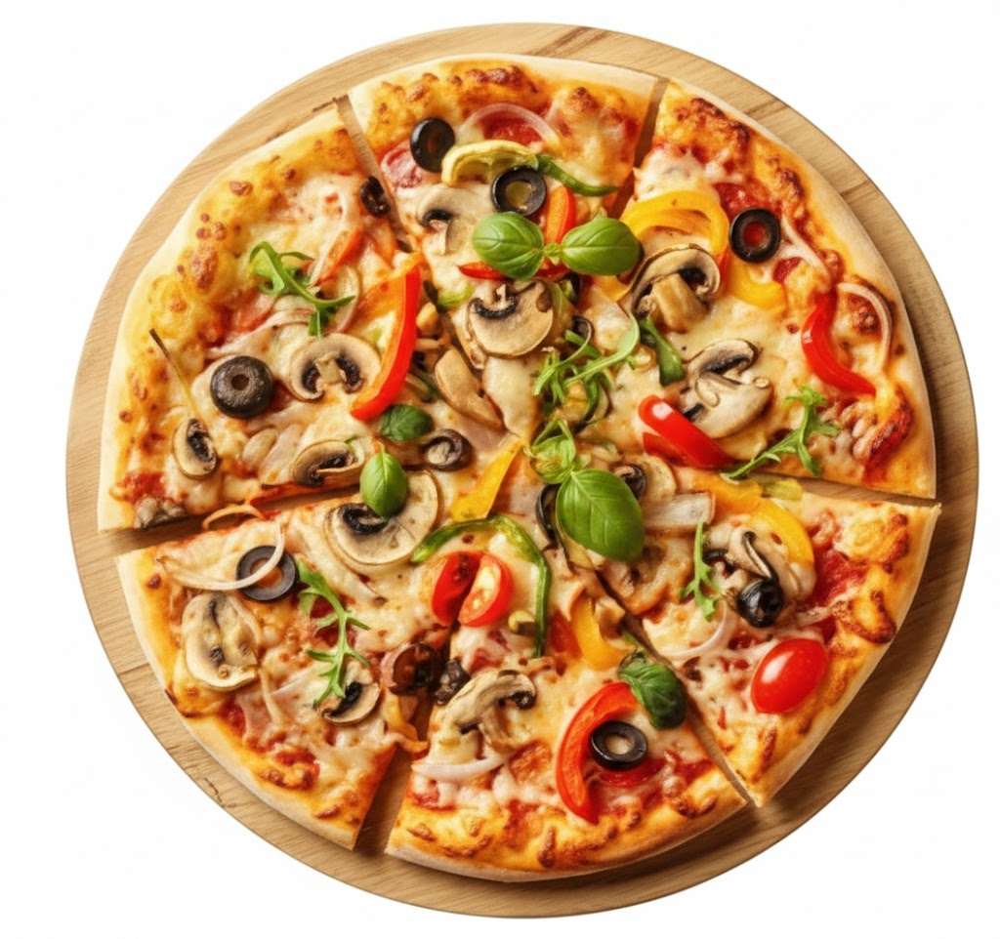
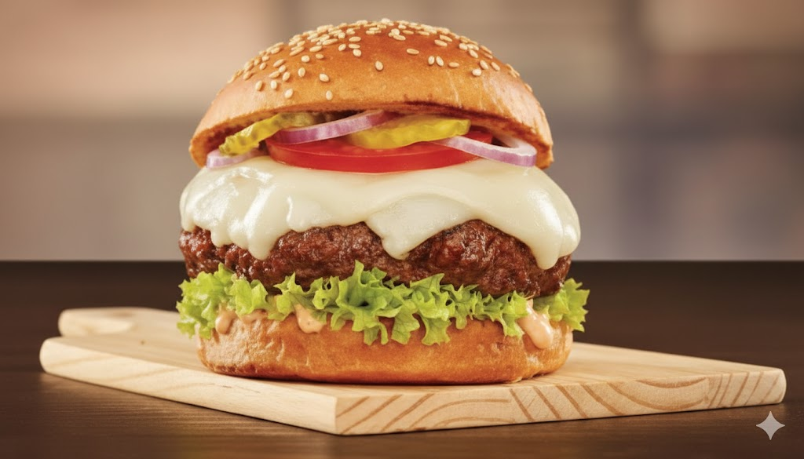
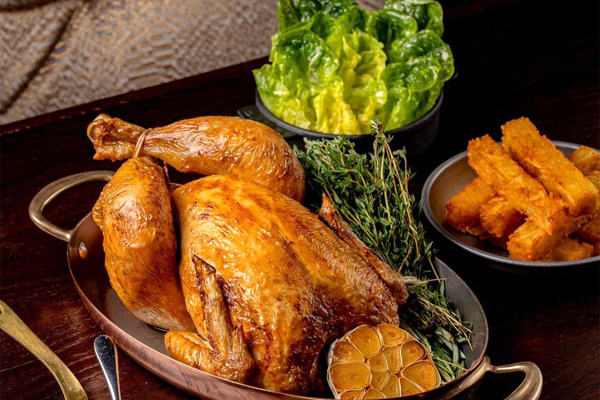

Menu
SERVICE WE PROVIDE FOR CUSTOMERS


Ethiopian Cultural Drinks

Traditional Ethiopian beverages that reflect the country's rich cultural heritage.
Traditional Ethiopian beverages that reflect the country's rich cultural heritage.
Discover the rich and diverse flavors of Ethiopian cuisine, where each dish tells a story of tradition and culture.
Doro Wat is a spicy chicken stew that is a staple in Ethiopian cuisine. It is made with chicken, onions, garlic, ginger, and a blend of spices including berbere, which gives it its distinctive flavor. The stew is typically served with injera, a sourdough flatbread that is used to scoop up the stew.

price:2000 ETB
Kitfo is a traditional Ethiopian dish made from raw minced beef, seasoned with spices such as mitmita and niter kibbeh (a spiced clarified butter). It is often served with injera and a side of ayib (Ethiopian cheese) or gomen (collard greens).

price:1500 ETB
Chechebsa is a traditional Ethiopian breakfast dish made from shredded flatbread (usually bread) mixed with spiced butter and berbere. It is often served with or sugar for added sweetness.

price:1000 ETB
Shiro is a popular Ethiopian dish made from ground chickpeas or lentils, cooked with spices such as berbere and niter kibbeh (a spiced clarified butter). It is often served with injera and can be enjoyed as a vegetarian or vegan option.

price:150 ETB
Experience the unique and flavorful dishes that make our restaurant stand out, crafted with care and passion to delight your taste buds.
Our pizza is made with a thin, crispy crust topped with a rich tomato sauce, fresh mozzarella cheese, and a variety of toppings including pepperoni, mushrooms, and bell peppers. Each pizza is baked to perfection in our wood-fired oven, resulting in a deliciously smoky flavor that will satisfy your cravings.

price:600 ETB
Our burger features a juicy beef patty cooked to your preference, topped with melted cheese, fresh lettuce, ripe tomatoes, and our special sauce, all nestled between a soft, toasted bun. It's a classic comfort food that delivers a satisfying and flavorful experience with every bite.

price:450 ETB
Our fried chicken is crispy on the outside and tender on the inside, seasoned with a blend of spices that give it a flavorful kick. Each piece is fried to golden perfection, making it a delicious and satisfying meal that will leave you craving more.

price:1800 ETB
M-Restaurant is a family-owned establishment that has been serving delicious meals with heart and tradition. Our mission is to provide a memorable dining experience with exceptional food, drinks, and service that makes every guest feel like part of our family.
At M-Restaurant, you can indulge in a wide variety of dishes that showcase the rich flavors of Ethiopian cuisine. From our signature injera and doro wat to our flavorful vegetarian options, we have something for everyone. Our menu also features a selection of traditional beverages, including Ethiopian coffee and refreshing juices. Whether you're looking for a hearty meal or a light snack, M-Restaurant is the perfect place to satisfy your cravings and experience the vibrant tastes of Ethiopia.